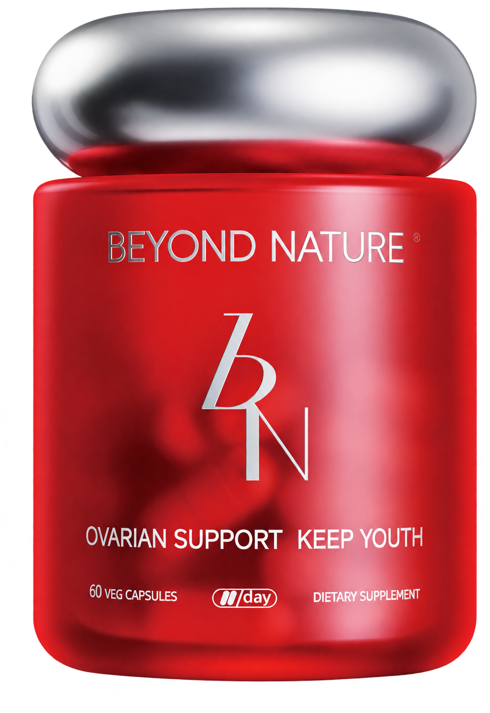

01
登记与使用前基线
填写姓名、年龄区间、跑龄与首次使用日期，留下使用前的运动指标。
开始登记↗首次使用前填写一次。已开始使用时，请记录可查到的使用前历史读数。
蓓养乐复原小红瓶 · 沙友试用跟踪计划

07DAYS填写姓名、年龄区间、跑龄与首次使用日期，留下使用前的运动指标。
开始登记↗首次使用前填写一次。已开始使用时，请记录可查到的使用前历史读数。
记录运动后疲惫、身体恢复、白天清醒程度与咖啡需求的实际变化。
填写今日打卡↗第1–7天每晚填写一次。使用相同姓名和编号，选择记录日期与第几天。
记录HRV、最大摄氧量VO₂max及停止运动后1分钟的心率变化。
填写一周后追踪↗完成7天使用后填写一次。尽量使用相同设备和测量条件，未测填写“未测”。
点击对应阶段进入腾讯问卷填写并提交，数据由活动组织者在其腾讯问卷账号中管理。三份问卷请始终使用相同姓名和沙友编号；未收到编号可以填写姓名。
改善、无变化或变差都同样重要。没有高强度运动、未上班或没有设备读数时，请按问卷中的对应选项填写。